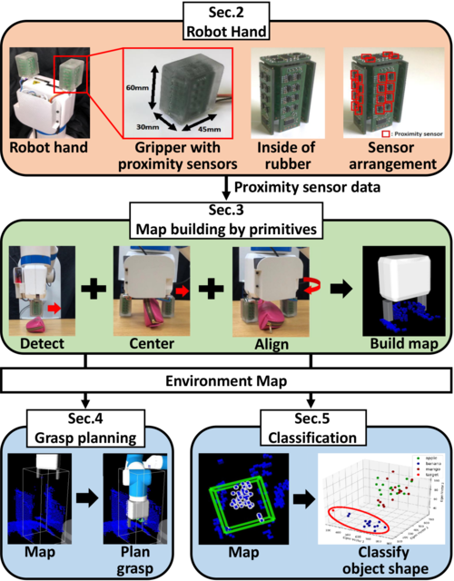
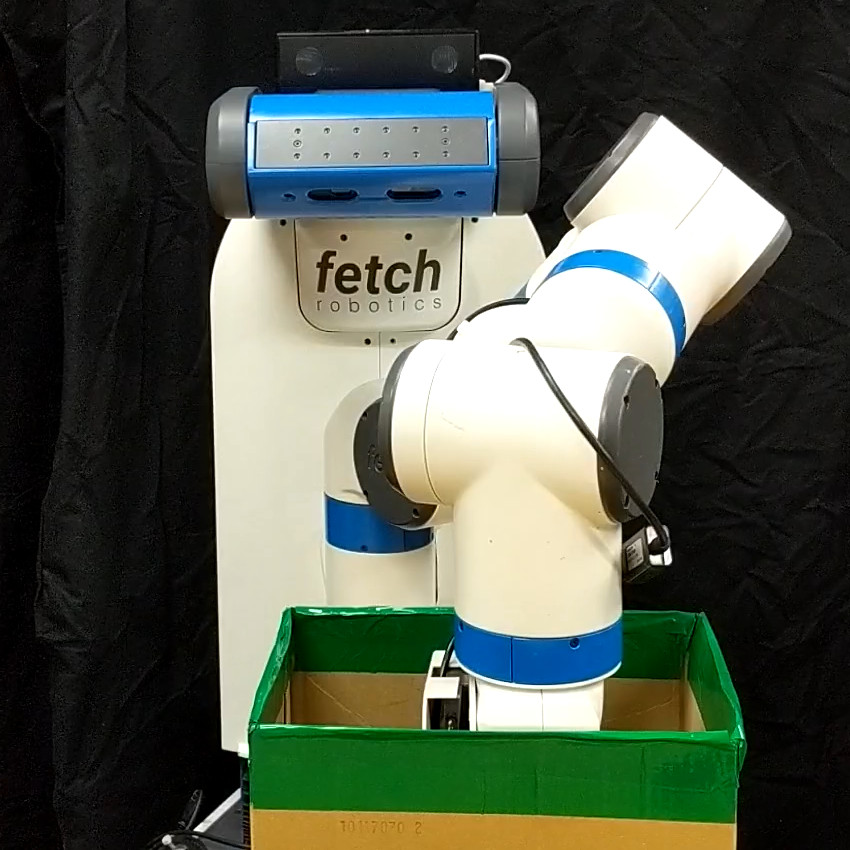
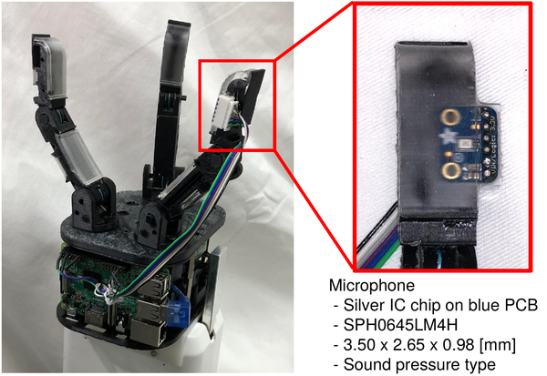

Publications
Journal Papers

Book Chapter
- Naoya Yamaguchi, Shun Hasegawa, Kei Okada, Masayuki Inaba , Daily Assistive Robot Uses a Bag for Carrying Objects with Pre-contact Sensing Gripper , Book chapter of Intelligent Autonomous Systems 15, pp.812-824, Springer (presented at The 15th International Conference on Intelligent Autonomous Systems)
International Conference Proceedings
Domestic Conference Proceedings


- Naoya Yamaguchi, Masaki Murooka, Shun Hasegawa, Kei Okada, Masayuki Inaba , 赤外線型近接覚センサを分布させた２本指ハンドにおける手探り環境の効率的探索と把持対象検知 , in 2019 JSME Conference on Robotics and Mechatronics (ROBOMECH2019), 1P2-C02

- Naoya Yamaguchi, Masaki Murooka, Shun Hasegawa, Koki Shinjo, Kei Okada, Masayuki Inaba , ゴムモールドされた音センサによる振動認識を利用した 衝突・滑り・変形を伴う物体操作の実現 , in SICE SI2019 Annual Conference (SI2019), 2C4-03